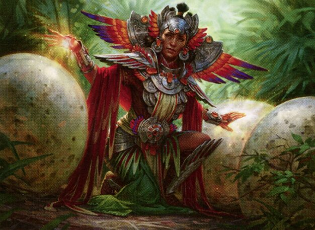

Edgar Markov
Spitzenklasse
Das Deck gewinnt 34 % seiner Partien – der Schnitt am Vierertisch liegt bei 25 %.
- Stufe · Elo
- S 1663 Platz 4 von 64 in der Rangliste bis 1.500 €
- Siegquote
- 34 % 51,2 Siege in 150 Partien, mit 90 % Sicherheit zwischen 28 und 41 %
- Platzierungen
- 141 %16×
- 221 %8×
- 321 %8×
- 418 %7×
Dort ein neues Deck anlegen und die Liste beim Import einfügen.
- Preis
- 1.463,11 €von 1.500,00 €
- Partien
- 150in 15 Turnieren
- Karten
- 10036 Länder, davon 14 Standard
- Game Changer
- 3höchstens 3 erlaubt
- Kombos
- 2komplett im Deck
- Regelcheck
- Bestanden100 Karten, Farben, Bannliste
KI-Hinweis: 4 Karten dieses Decks kann die Forge-KI nicht spielen (in den Forge-Partien durch ähnliche ersetzt), 8 weitere spielt sie nur eingeschränkt. Das Ergebnis ist darum etwas weniger aussagekräftig. Betroffene Karten
Höchstens 1.500 € inklusive Commander. Steigen die Preise darüber, wird die Kaufliste automatisch neu gebaut.
Stärken und Schwächen
Aus 110 ausgewerteten Partien in 11 Turnieren (mit den Listen, die im Turnier gespielt wurden). Partien am Zeitlimit zählen wie in der Rangliste nicht. Werte in Klammern: Schnitt aller Decks derselben Preisklasse. Die genauen Zahlen siehst du, wenn du mit der Maus auf einen Punkt zeigst oder ihn antippst.
Spielweise: gewinnt über den Kampf – 99 % des Schadens an Gegnern ist Kampfschaden · So gewinnt es: 51 % der Siege durch Überleben – die Gegner schalteten sich gegenseitig aus (Schnitt aller Decks: 35 %)
Stärken
- Gewinnt oft per Kombo Hinweisin 19 von 39 Siegen lagen alle Teile einer Kombo im Spiel
- Gewinnt schnell sicherSiege im Schnitt schon im 10. eigenen Zug (Schnitt aller Decks: 12.) · 39 Siege
- Nutzt sein Mana gut sicherNur 21 % der Länder blieben in einem Zug ungenutzt (Schnitt aller Decks: 27 %) – das Deck hat fast immer etwas zu spielen · gemessen in den eigenen Zügen 3–8, 110 Partien
Schwächen
- Anfällig für direkten Schaden sichernur 41 % der Niederlagen durch Kampf, der Rest durch Zauber, Entzug oder Fähigkeiten (Schnitt aller Decks: 61 % Kampf) · 29 von 70 Niederlagen
Gegen wen es gewinnt
Siegquote an Tischen, an denen dieser Commander mitspielte – nur Gegner aus der aktuellen Rangliste mit mindestens 20 gemeinsamen Partien. Am Vierertisch liegt der Schnitt bei 25 %.
Gewinnt oft gegen
 43 %von 21
43 %von 21 32 %von 22
32 %von 22 30 %von 20
30 %von 20
Tut sich schwer gegen

17 %von 24 19 %von 27
19 %von 27 20 %von 25
20 %von 25
Mit einem anderen Commander vergleichen
Commander (1)
- Edgar Markov27,09 €
Kreaturen (35)
- Esper Sentinel Kartenziehen39,61 €
- Bloodthirsty ConquerorKombo30,06 €
- Bloodletter of AclazotzKombo26,18 €
- Charismatic Conqueror23,84 €
- Vito, Thorn of the Dusk RoseKombo9,04 €
- Elenda, the Dusk Rose6,41 €
- Bloodline Keeper // Lord of Lineage5,43 €
- Master of Dark Rites Ramp4,41 €
- Edgar, Charmed Groom // Edgar Markov's Coffin4,29 €
- Welcoming Vampire Kartenziehen3,47 €
- Malakir BloodwitchKI schwach3,00 €
- Blood Artist2,14 €
- Cordial Vampire2,05 €
- Captivating VampireKI schwach2,01 €
- Clavileño, First of the Blessed Kartenziehen1,89 €
- Twilight Prophet1,85 €
- Scheming Silvertongue // Sign in Blood Kartenziehen1,18 €
- Drana, Liberator of Malakir1,10 €
- Cruel Celebrant0,86 €
- Stromkirk Captain0,78 €
- Legion Lieutenant0,57 €
- Viscera SeerKomboKI kann nicht0,54 €
- Mavren Fein, Dusk Apostle0,51 €
- Patron of the Vein Removal0,50 €
- Sanctum Seeker0,50 €
- Vampire of the Dire Moon0,46 €
- Champion of Dusk Kartenziehen0,35 €
- Vampire Socialite0,35 €
- Crossway Troublemakers Kartenziehen0,29 €
- Markov Baron0,22 €
- Yahenni, Undying PartisanKombo0,20 €
- Baron Bertram Graywater Kartenziehen0,19 €
- Indulgent AristocratKI schwach0,17 €
- Bloodtithe Harvester Removal0,12 €
- Marauding Blight-PriestKombo0,12 €
Planeswalker (1)
- Sorin, Imperious Bloodlord Removal5,53 €
Spontanzauber (8)
- Vampiric TutorGame ChangerKI kann nicht40,57 €
- Teferi's Protection SchutzGame Changer30,34 €
- Akroma's Will Schutz15,28 €
- Anguished Unmaking Removal1,69 €
- Dark Ritual1,55 €
- Swords to Plowshares Removal1,01 €
- Path to Exile Removal1,00 €
- Village Rites Kartenziehen0,21 €
Hexereien (5)
- Demonic TutorGame ChangerKI schwach42,56 €
- Diabolic IntentKI kann nicht12,16 €
- Blood TributeKombo2,05 €
- Damn Board Wipe1,86 €
- Olivia's Wrath Board Wipe1,25 €
Artefakte (7)
- Lotus Petal RampKI schwach24,59 €
- Skullclamp Kartenziehen4,21 €
- Sol Ring Ramp0,74 €
- Talisman of Indulgence Ramp0,66 €
- Talisman of Hierarchy Ramp0,54 €
- Arcane Signet Ramp0,36 €
- Orzhov Signet Ramp0,32 €
Verzauberungen (7)
- Anointed Procession35,89 €
- Exquisite BloodKombo29,56 €
- The Meathook Massacre Board Wipe24,10 €
- Black Market Connections Ramp11,52 €
- Cathars' CrusadeKombo5,01 €
- Sanguine BondKomboKI schwach3,67 €
- Shared AnimosityKI schwach2,15 €
Länder (36)
- Badlands352,37 €
- Plateau287,62 €
- Scrubland100,00 €
- Cavern of Souls36,81 €
- Urborg, Tomb of YawgmothKI schwach32,87 €
- Arid Mesa25,94 €
- Marsh Flats25,09 €
- Three Tree City22,03 €
- Phyrexian TowerKI kann nicht20,92 €
- Bloodstained Mire16,99 €
- Luxury Suite8,87 €
- Vault of Champions8,28 €
- Blood Crypt7,34 €
- Godless Shrine7,25 €
- Sacred Foundry7,09 €
- Isolated Chapel0,31 €
- Secluded Courtyard0,24 €
- Unclaimed Territory0,24 €
- Voldaren Estate0,24 €
- Command Tower0,18 €
- Nomad Outpost0,15 €
- Path of Ancestry0,12 €
- 10× Swamp
- 1× Mountain
- 3× Plains
Welche Karten Siege bringen
Aus 110 Partien dieses Decks: Wie oft es gewonnen hat, wenn die Karte in der Partie gespielt wurde – verglichen mit seinem Schnitt von 35 %. Nur Karten, die mindestens 20-mal gespielt wurden. Teure Karten, die spät kommen, sehen oft etwas besser aus, weil man dafür lange genug überleben muss.
| Karte | Partien | Siege, wenn gespielt | gegenüber Schnitt |
|---|---|---|---|
| Vito, Thorn of the Dusk Rose | 31 | 61 % | +26 |
| Exquisite Blood | 20 | 55 % | +20 |
| Bloodthirsty Conqueror | 24 | 50 % | +15 |
| Demonic Tutor | 20 | 50 % | +15 |
| Marauding Blight-Priest | 20 | 50 % | +15 |
| Patron of the Vein | 23 | 48 % | +12 |
| Drana, Liberator of Malakir | 26 | 46 % | +11 |
| Scheming Silvertongue | 20 | 45 % | +10 |
| Sorin, Imperious Bloodlord | 28 | 43 % | +7 |
| Anguished Unmaking | 22 | 41 % | +5 |
Alle 19 Karten zeigen
| Karte | Partien | Siege, wenn gespielt | gegenüber Schnitt |
|---|---|---|---|
| Master of Dark Rites | 20 | 40 % | +5 |
| Skullclamp | 24 | 38 % | +2 |
| Indulgent Aristocrat | 27 | 37 % | +2 |
| Markov Baron | 25 | 36 % | +1 |
| Captivating Vampire | 20 | 35 % | −0 |
| Sol Ring | 20 | 35 % | −0 |
| Cruel Celebrant | 23 | 35 % | −1 |
| Swords to Plowshares | 22 | 32 % | −4 |
| Vampire of the Dire Moon | 21 | 24 % | −12 |
Starthand ziehen
Sieben zufällige Karten aus diesem Deck – so siehst du, wie sich der Start anfühlt. Der Commander liegt wie im Spiel nicht im Stapel.
Kombos im Deck (2)
Laut Commander Spellbook mit dieser Kartenliste möglich. Was eine Kombo genau braucht, steht dort. Ob eine Kombo in Partien wirklich zusammenkam, steht im Reiter „Partien“.
- Vito, Thorn of the Dusk Rose + Exquisite Blood → ∞ Lebensgewinn-Auslöser, ∞ Lebensverlust, ∞ Lebensgewinn
Beispiel – 8 Fassungen mit diesen Karten: Exquisite Blood · Vito, Thorn of the Dusk Rose · Bloodthirsty Conqueror · Sanguine Bond · Marauding Blight-Priest · Blood Tribute · Bloodletter of Aclazotz - Cathars' Crusade + … → ∞ +1/+1-Marken auf den meisten deiner Kreaturen, ∞ ETB-Auslöser von Kreaturen, ∞ LTB-Auslöser von Kreaturen
2 Fassungen, dazu passt jeweils eine von: Viscera Seer · Yahenni, Undying Partisan
Commander Spellbook führt 10 Einträge, weil jede Fassung einzeln zählt (zum Beispiel mit einem anderen Opfer-Ziel). Hier zählt jede Kombo einmal.
Alle 10 Einträge anzeigen
- Sanguine Bond + Exquisite Blood → ∞ Lebensgewinn-Auslöser, ∞ Lebensverlust, ∞ Lebensgewinn
- Vito, Thorn of the Dusk Rose + Exquisite Blood → ∞ Lebensgewinn-Auslöser, ∞ Lebensverlust, ∞ Lebensgewinn
- Vito, Thorn of the Dusk Rose + Bloodthirsty Conqueror → ∞ Lebensgewinn-Auslöser, ∞ Lebensverlust, ∞ Lebensgewinn
- Sanguine Bond + Bloodthirsty Conqueror → ∞ Lebensgewinn-Auslöser, ∞ Lebensverlust, ∞ Lebensgewinn
- Marauding Blight-Priest + Exquisite Blood → ∞ Lebensgewinn-Auslöser, ∞ Lebensverlust, ∞ Lebensgewinn
- Marauding Blight-Priest + Bloodthirsty Conqueror → ∞ Lebensgewinn-Auslöser, ∞ Lebensverlust, ∞ Lebensgewinn
- Vito, Thorn of the Dusk Rose + Blood Tribute → Ein Gegner verliert das Spiel, ∞ Lebensverlust für einen Gegner
- Bloodletter of Aclazotz + Blood Tribute → ∞ Lebensverlust für einen Gegner, Fast ∞ Lebensgewinn, Ein Gegner verliert das Spiel
- Viscera Seer + Cathars' Crusade → ∞ +1/+1-Marken auf den meisten deiner Kreaturen, ∞ ETB-Auslöser von Kreaturen, ∞ LTB-Auslöser von Kreaturen
- Cathars' Crusade + Yahenni, Undying Partisan → ∞ +1/+1-Marken auf den meisten deiner Kreaturen, ∞ ETB-Auslöser von Kreaturen, ∞ LTB-Auslöser von Kreaturen
Für die Forge-KI angepasst
Die Liste oben ist die beste getestete Fassung, so wie du sie in echten Partien spielen würdest. Ein paar Karten kann die Forge-KI nicht spielen – sie wurden im Turnier durch andere ersetzt (dabei baut der Deckbauer im Budget auch andere Plätze um). Die Siegquote stammt aus Partien mit diesen Ersatzkarten; die Originalkarten selbst sind nicht von der KI getestet.
- Diabolic Intent: KI kann sie nicht spielen
- Orzhov Signet: Ausgleich für eine andere ersetzte Karte
- Phyrexian Tower: KI kann sie nicht spielen
- Scheming Silvertongue // Sign in Blood: für einen Test getauscht
- Vampiric Tutor: KI kann sie nicht spielen
- Viscera Seer: KI kann sie nicht spielen
- Forerunner of the Legion: Ersatz
- Knight of the Ebon Legion: Ersatz
- Phyrexian Altar: Ersatz
- Phyrexian Arena: Test
- Savai Triome: Ersatz
- Smothering Tithe: Ersatz
Die Partien in Zahlen
- Commander gewirkt
- 100 %der Partien, in 12 % bis zum 4. Zug
- Schaden je Partie
- 33Schnitt: 29
- Siege im Schnitt
- Zug 10,5eigener Zug, Schnitt: 11,6
- Als Erstes ausgeschieden
- 24 %26 von 109 Partien, Schnitt: 25 %
- Zu wenig Länder
- 9 %der Partien, davon 3 gewonnen, Schnitt: 8 %
- Mulligans
- 6 %7 in 110 Partien, Schnitt: 10 %
Karten mit messbarem Einfluss
Ein Zusammenhang, kein Beweis: Diese Karten kamen in Siegen deutlich öfter ins Spiel.
- Vito, Thorn of the Dusk Rose – gewonnen in 61 % der Partien, in denen sie gewirkt wurde (31), sonst 25 %
- Olivia's Wrath – gewonnen in 62 % der Partien, in denen sie gewirkt wurde (13), sonst 32 %
- Exquisite Blood – gewonnen in 55 % der Partien, in denen sie gewirkt wurde (20), sonst 31 %
Was die Partien zeigen
Aus 110 ausgewerteten Partien in 11 Turnieren (mit den Listen, die im Turnier gespielt wurden). Partien am Zeitlimit zählen wie in der Rangliste nicht. Werte in Klammern: Schnitt aller Decks derselben Preisklasse. „sicher“: steht so im Spielprotokoll. „Hinweis“: kommt immer wieder vor, ist aber kein Beweis.
Schaden pro Partie alle Partien
Schaden an Gegnern pro Partie, gerechnet über alle 110 Partien – was die Karte insgesamt beiträgt
- Vampire Token Ø 8,5traf in 82 von 110 Partien
- Edgar Markov Ø 6,7traf in 63 von 110 Partien
- Malakir Bloodwitch Ø 1,2traf in 13 von 110 Partien
Schaden bei Einsatz wenn sie trifft
Gesamtschaden ÷ Partien, in denen die Karte Schaden gemacht hat – ihre Stärke im Einsatz
- Edgar Markov Ø 11,8traf in 63 von 110 Partien
- Vampire Token Ø 11,4traf in 82 von 110 Partien
- Malakir Bloodwitch Ø 10,1traf in 13 von 110 Partien
Top-Finisher schaltet Gegner aus
Karten, die am häufigsten einen gegnerischen Commander aus der Partie genommen haben
- Vampire Token 40×110 Partien im Deck
- Edgar Markov 10×110 Partien im Deck
- Bloodletter of Aclazotz 3×110 Partien im Deck
Beste Interaktion räumt auf
Gegnerkarten, die beim Auflösen dieser Karte zerstört, verbannt, zurückgeschickt oder neutralisiert wurden (ohne Spielsteine)
- Swords to Plowshares 20×Ø 0,2 pro Partie · 110 Partien im Deck
- Patron of the Vein 18×Ø 0,2 pro Partie · 110 Partien im Deck
- Anguished Unmaking 18×Ø 0,2 pro Partie · 110 Partien im Deck
Größte Hindernisse blockt am meisten
Gegnerische Karten, die die Angreifer dieses Decks am häufigsten geblockt haben – insgesamt 13 % der 1453 Angreifer geblockt, davon 31 % durch Flieger oder Reichweite
- Wizard Token 9×blockte in 5 Partien
- Oloro, Ageless Ascetic 5×blockte in 5 Partien
- Giada, Font of Hope 5×blockte in 3 Partien
Selten gewirkt Kandidaten zum Tauschen
Karten dieser Liste, die in ihren Partien am seltensten gewirkt wurden – oft zu teuer oder zu langsam (Länder ausgenommen)
- Teferi's Protection 0 %gewirkt in 0 von 110 Partien
- The Meathook Massacre 3 %gewirkt in 3 von 110 Partien
- Orzhov Signet 7 %gewirkt in 4 von 60 Partien
Siege nach Zug Tempo
In welchem eigenen Zug die 39 Siege kamen
- bis Zug 710 %
- Zug 8–926 %
- Zug 10–1133 %
- Zug 12–1321 %
- ab Zug 1410 %
Kombos im Spiel sicher Sanguine Bond + Exquisite Blood: alle Teile gewirkt in 4 Partien, davon 3 gewonnen · Vito, Thorn of the Dusk Rose + Exquisite Blood: alle Teile gewirkt in 10 Partien, davon 8 gewonnen · Vito, Thorn of the Dusk Rose + Bloodthirsty Conqueror: alle Teile gewirkt in 4 Partien, davon 3 gewonnen · Sanguine Bond + Bloodthirsty Conqueror: alle Teile gewirkt in 7 Partien, davon 5 gewonnen
Elo-Verlauf
Elo nach jedem Turnier, älteste links. Gestrichelt: Stufengrenzen S, A, B, C.
Jetzt 1663, am höchsten 1663 (22.11.), am niedrigsten 1522 – aus 15 Turnieren.
Letzte Partien
Platz in jeder Partie zu viert, älteste links: Gold = Sieg, Silber = 2, Bronze = 3, rot = 4, Ring = Remis.
1411423334123441321111223122=31131114421In den letzten 40 Partien 16× Sieg, 8× Platz 2, 8× Platz 3 und 7× Platz 4, dazu 1× Remis.
Manakurve ohne Länder
Durchschnitt 2,83
Aufgaben im Deck
Anzahl / Richtwert aus dem EDHREC-Durchschnittsdeck (der Strich), rot heißt deutlich darunter. Strategie: die übrigen Karten ohne eine dieser Aufgaben, etwa die Kreaturen und Effekte, um die sich das Deck dreht. Zusammen 63 Karten ohne Länder.
Kartentypen
- Kreaturen35 %35
- Planeswalker1 %1
- Spontanzauber8 %8
- Hexereien5 %5
- Artefakte7 %7
- Verzauberungen7 %7
- Länder36 %36
Teuerste Karten
Was das Programm gelernt hat
In jedem Turnier testet das Deck eine Karte. Ein Urteil gibt es erst ab 40 Partien mit und ohne die Karte. Weil das Deck jedes Turnier mit aktuellen Preisen und Daten neu gebaut wird, können getestete Karten später wieder herausfallen.
- kein klarer Unterschied Phyrexian Arena statt Scheming Silvertongue // Sign in Blood · Siegquote 38 % mit, 32 % ohne (50 / 100 Partien)
- kein klarer Unterschied Lotus Petal statt Talisman of Indulgence · Siegquote 33 % mit, 36 % ohne (100 / 50 Partien)
- kein klarer Unterschied Phyrexian Altar statt New Blood · Siegquote 34 % mit, 35 % ohne (90 / 60 Partien) · aus einer früheren Fassung, heute nicht im Deck
6 weitere getestete Karten sammeln noch Partien.
Kaufliste für Cardmarket
Liste kopieren, auf Cardmarket unter „Wants“ eine neue Liste anlegen und einfügen.
Zusammen 1.463,11 € Cardmarket-Durchschnitt vom 24.11.2026
Cardmarket Wants öffnenPreise ohne Versand. Einzelne Karten können bei Cardmarket inzwischen teurer oder günstiger sein.
Gespielt von der Forge-KI, zu viert. Ein durchschnittliches Deck gewinnt 25 %. Wie wird getestet?